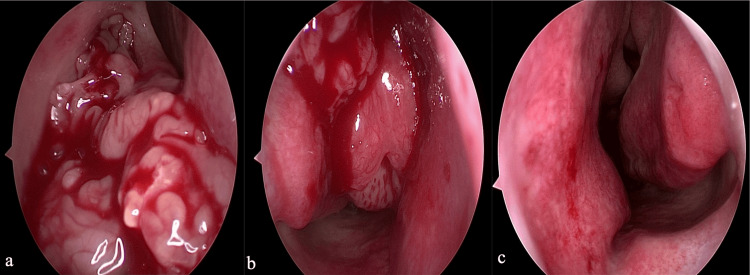
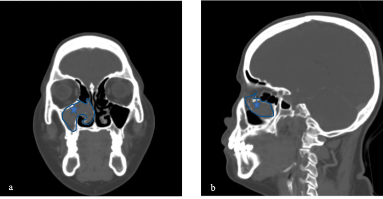
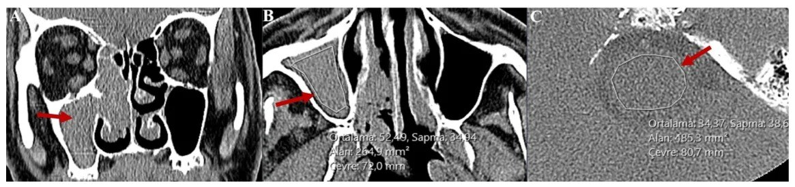
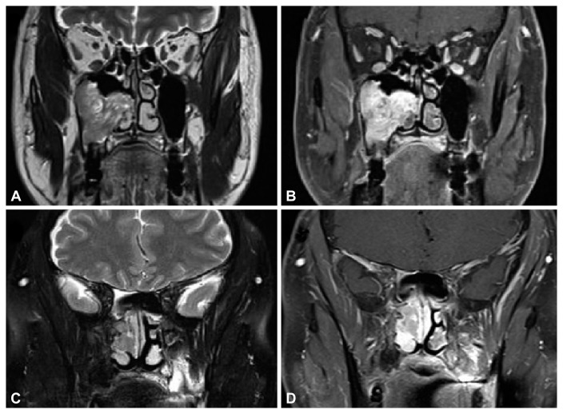

3066 — U nhú đảo ngược mũi xoang (sinonasal inverted papilloma): "cuộn não", tăng xương tại chân bám và ngưỡng nghi ung thư
Tags: pattern:khoi-mot-ben pattern:tang-xuong-khu-tru pattern:cuon-nao pattern:mon-xuong pattern:calci-hoa pattern:ngam-thuoc-khong-deu vung:mui vung:xoang vung:mat-co score:Krouse protocol:CT-xoang protocol:MRI-xoang protocol:noi-soi incidentaloma:khong
Mức chắc chắn (certainty): tổng hợp y văn (literature synthesis) — đoàn hệ 73 ca có phân độ Krouse + tái phát + biến đổi ác tính (Life 2026, PMC13027472), loạt 71 tổn thương mổ nội soi định hướng chân bám (Eur Arch Otorhinolaryngol 2026, PMC13615142), 92 ca đo tỉ số HU trên CT không cản quang (Tomography 2026, PMC13709540), 30 ca so sánh u nhú với ung thư biểu mô vảy trên u nhú (J Rhinol 2026, PMC13065420) và ca nguyên văn có ảnh nội soi + CT chân bám (Cureus 2026, PMC13476601). Không có ca do nhóm tự chụp.
Câu hỏi thực hành: nam 70 tuổi, tắc mũi phải tăng dần 18 tháng, chảy mũi một bên, không đau, nội soi thấy khối sần, đỏ, dễ chảy máu ở thành bên hốc mũi. CT xoang: khối đặc một bên lấp xoang hàm phải, dày xương khu trú ở thành trong xoang hàm. Bác sĩ hỏi: "Đây là polyp hay u? Có phải ung thư không? Cần mổ bao rộng và theo dõi thế nào?" Bài chốt năm quyết định: (1) khối mũi một bên ở người lớn là u cho đến khi chứng minh ngược — không gọi "polyp"; (2) tăng xương khu trú (focal hyperostosis) không phải xâm lấn xương mà là dấu chỉ chân bám — phải cắt hết chân bám thì mới giảm tái phát; (3) "cuộn não" (convoluted cerebriform pattern) là dấu hiệu điển hình nhưng CŨNG gặp ở ung thư biểu mô vảy — không dùng để loại ác tính; (4) biến đổi ác tính 5–15%, trong đoàn hệ 73 ca là 12% (9/73), 6 ca xuất hiện 1–5 năm sau mổ → phải theo dõi dài; (5) HU và tỉ số HU không phân biệt được u nhú với ung thư (AUC 0,667) — cần MRI + DWI/ADC + mô bệnh.
1. Tổng quan bệnh học – cơ chế hình ảnh (TẠI SAO)
- Bản chất: u nhú đảo ngược (sinonasal inverted papilloma — IP) là u biểu mô lành tính nhưng xâm lấn tại chỗ, xuất phát từ niêm mạc Schneiderian phủ mũi và xoang; tế bào biểu mô phát triển đảo ngược vào lớp đệm thay vì lồi ra ngoài (khác u nhú ngoài — exophytic). HPV 6/11 và EGFR được coi là yếu tố thúc đẩy; p16 mất/giảm liên quan tái phát (p = 0,006) (PMC13027472).
- Dịch tễ định lượng (đoàn hệ 73 ca, PMC13027472): 75% nam; tuổi trung bình 44,6 ± 13,3; thời gian triệu chứng trung vị 18 tháng (IQR 6–36); 93% tắc mũi, 69% chảy mũi, 27% đau đầu, 16% chảy máu cam, 10% mất mùi; 7% không triệu chứng, phát hiện tình cờ. Vị trí: xoang hàm 49%, sàng 25%, thành bên hốc mũi 18%, xoang trán 4 ca, xoang bướm 2 ca.
- TẠI SAO có "cuộn não": tổn thương gồm dải biểu mô dày xen kẽ dải mô đệm xơ mỏng, uốn lượn như các cuộn não. Trên T2 và T1 sau tiêm, các dải biểu mô (nhiều tế bào, ít nước tự do) tạo đường thẳng/đường cong tăng tín hiệu hoặc ngấm thuốc, xen dải mô đệm tối. Vì vậy "cuộn não" là mô tả cấu trúc mô học, không phải dấu hiệu của lành tính.
- TẠI SAO T2 của u nhú chỉ trung gian: u nhú giàu tế bào, ít nước tự do, nên T2 trung gian — tối hơn hẳn polyp (polyp phù nề, nhiều dịch → T2 rất sáng). Đây là lý do T2 giúp tách u khỏi dịch/niêm mạc viêm, nhưng không tách u nhú khỏi ung thư.
- TẠI SAO có tăng xương khu trú: tại chỗ bám, màng xương bị kéo căng lâu ngày → phản ứng tạo xương (osteoblastic reaction), xương dày lên khu trú chứ không bị u xâm lấn. Vì thế tăng xương là bản đồ chỉ chân bám: cắt bỏ chân bám + mài xương tại đó là yếu tố quyết định không tái phát. Trong đoàn hệ 73 ca, 100% ca có tăng xương khu trú khớp với vị trí bám dự kiến trên CT (PMC13027472).
- TẠI SAO vẫn có mòn xương: u lớn gây áp lực làm mỏng/tiêu xương ( remodeling), khác xâm lấn kiểu ác tính (bờ nham nhở, phá vỡ liên tục vỏ xương). Vì vậy mòn xương không đồng nghĩa ung thư, và không có mòn xương cũng không loại ung thư.
- TẠI SAO HU không phân biệt được u nhú với ung thư: cả hai đều là mô đặc giàu tế bào, đậm độ chồng lấp. Nghiên cứu 92 ca: tỉ số HU (tổn thương/chân cầu) phân biệt polyp với u nhú tốt (AUC 0,815; ngưỡng 1,302, Se 62,5%, Sp 85,7%) nhưng phân biệt u nhú với ung thư kém (AUC 0,667, KTC 95% 0,498–0,826) (PMC13709540). Đậm độ thực tế: u nhú 52,49 HU so với chân cầu 34,37 HU (tỉ số 1,52); polyp 21,43 HU so với chân cầu 21,93 HU (tỉ số 0,97).
- TẠI SAO ADC giúp ích: ung thư giàu tế bào hơn, nhân lớn hơn → hạn chế khuếch tán → ADC thấp. Trong 30 ca: ADC 0,99 so với 1,20 × 10⁻³ mm²/s (u nhú + ung thư so với u nhú đơn thuần, p = 0,026); tín hiệu trung gian trên T2 và T1 sau tiêm cũng gặp nhiều hơn ở nhóm ác tính (p = 0,025 và p = 0,029) (PMC13065420).
- TẠI SAO phải theo dõi lâu: biến đổi ác tính 5–15% (PMC13065420); trong 73 ca là 12% (9/73) — 3 ca có ngay lần mổ đầu, 6 ca xuất hiện 1–5 năm sau (PMC13027472). Yếu tố liên quan: hút thuốc (100% ca ác tính so với 52%, p = 0,01).
- TẠI SAO tái phát phụ thuộc chân bám: tái phát 19% (14/73), xuất hiện 8 tháng–4 năm (trung bình 2,1 năm); yếu tố nguy cơ: triệu chứng kéo dài (30 so với 12 tháng, p = 0,003), hút thuốc (86% so với 51%, p = 0,03), Krouse III–IV (86% so với 34%, p < 0,001), gốc xoang trán (21% so với 2%, p = 0,02), HPV+ (50% so với 22%, p = 0,048) (PMC13027472). Ngược lại, loạt 71 tổn thương mổ nội soi định hướng chân bám chỉ tái phát 4,2% (3/71), tất cả ở T3–T4, biến chứng 5,6% (3 ca chảy máu động mạch, 1 ca rò dịch não tủy), theo dõi trung vị 46 tháng (PMC13615142).
2. Mẫu hình + chẩn đoán phân biệt theo vị trí (Gamut)
- Theo vị trí khối một bên:
- Thành bên hốc mũi / xoang hàm → u nhú đảo ngược (hay gặp nhất, 49% xoang hàm), polyp mũi–xoang, ung thư biểu mô vảy, u nhú ngoài.
- Xoang sàng / mũi trên → u nhú, ung thư sàng, u nguyên bào khứu giác (esthesioneuroblastoma), u hắc tố niêm mạc.
- Xoang bướm → u nhú, máu tụ tổ chức hóa (bài 3051), nấm xoang, di căn.
- Vách mũi → u nhú đảo ngược thể vách, u nhú ngoài, schwannoma, u mạch.
- Theo hình thái trên CT:
- Khối đặc + tăng xương khu trú + mòn xương áp lực → u nhú.
- Khối + vôi hóa trong tổn thương → u nhú (dystrophic), nấm xoang, u sụn, u xơ–xương.
- Khối + phá xương bờ nham nhở + xâm lấn mô mềm → ung thư.
- Khối + dịch ứ sau lỗ thông → bất kỳ u nào chặn lỗ thông; đừng nhầm dịch ứ là phần của u.
- Mnemonic cho khối mũi một bên ở người lớn: SINUS — Schneiderian papilloma (IP), Inflammatory polyp (một bên là bất thường), Neoplasm (SCC, adenocarcinoma, lymphoma), Unusual (máu tụ tổ chức hóa, nấm, REAH), Secondary (di căn, u lan từ nền sọ).

(a) Hốc mũi phải: khối dạng múi, sần, lấp hốc mũi. (b) Khối dạng polyp xuất phát từ thành bên hốc mũi — đây là hướng gợi ý chân bám. (c) Hốc mũi trái bình thường, không tổn thương. Nguồn: Cureus 2026 (PMC13476601), Fig. 1, CC BY 4.0.3. Bảng so sánh phân biệt (ma trận đối chiếu)
| Thực thể (entity) | Hình ảnh điển hình (CT/MRI) | Chốt vào (rule-in) | Chốt loại (rule-out) | Gợi ý xác nhận |
|---|---|---|---|---|
| U nhú đảo ngược (IP) | Khối một bên; tăng xương khu trú tại chân bám; mòn xương áp lực; MRI cuộn não, T2 trung gian, ngấm không đều | Tăng xương khu trú + cuộn não + khối một bên ở người lớn | Không có dấu hiệu nào loại trừ ung thư | Nội soi + sinh thiết bờ tổn thương; CT/MRI trước mổ; mô bệnh |
| Polyp mũi–xoang (một bên) | Khối nhẵn, T2 rất sáng, không ngấm (chỉ niêm mạc mỏng ngấm); không tăng xương; tỉ số HU ~1,0 | T2 rất sáng + không ngấm + tỉ số HU thấp (ngưỡng 1,302) | Tăng xương khu trú + cuộn não + HU cao (52 HU) → u nhú | Mô bệnh; đáp ứng corticoid tại chỗ |
| Ung thư biểu mô vảy (SCC) / IP + SCC | Phá xương bờ nham nhở, xâm lấn mô mềm, hoại tử; T2/T1 sau tiêm trung gian, ADC thấp (0,99) | ADC thấp + hoại tử + phá xương không bờ | ADC cao (1,20) + không hoại tử + bờ xương nhẵn → chưa chắc ác, nhưng không loại trừ | Sinh thiết nhiều điểm; MRI DWI/ADC; mô bệnh sau mổ |
| Máu tụ tổ chức hóa (organized hematoma) | Khối xoang, viền ngấm thuốc, bên trong không ngấm, T1/T2 hỗn hợp do hemoglobin, có thể vôi hóa | Tiền sử chấn thương/chảy máu + viền ngấm + lõi không ngấm | Cuộn não + tăng xương khu trú → u nhú | MRI không cản quang + theo dõi; mô bệnh nếu không thoái triển |
| Nấm xoang (fungal ball) | Khối đậm, vôi hóa trung tâm, xoang mờ một bên, không ngấm, không tăng xương; niêm mạc kề dày | Vôi hóa trong khối + không ngấm + xoang một bên | Ngấm không đều + tăng xương + cuộn não → u | Mô bệnh/nhuộm nấm; nội soi |
| REAH (hamartoma tuyến biểu mô hô hấp) | Khối hai bên hoặc một bên, khe hẹp giữa vách mũi và khối ("clefting"), T2 trung gian, ngấm đều | Dấu khe (clefting) + vị trí mũi trên | Tăng xương khu trú + cuộn não → u nhú | Mô bệnh |
| U nguyên bào khứu giác | Khối mũi trên/sàng, vòi não, nang trong u, vôi hóa ngoại vi, lan qua tấm sàng | Vị trí mũi trên + nang trong u + vôi hóa ngoại vi | Cuộn não + tăng xương tại thành bên → u nhú | MRI nền sọ; mô bệnh + IHC |

CT có cản quang, cửa sổ xương. (a) Coronal và (b) Sagittal: khối lấp xoang hàm phải; ngôi sao xanh đánh dấu chân bám (pedicle) — nơi phải cắt hết và mài xương. Nguồn: Cureus 2026 (PMC13476601), Fig. 2, CC BY 4.0.4. Protocol chụp + phân độ và chiến lược mổ
- CT xoang không cản quang, lát mỏng 0,5–0,75 mm, tái tạo axial + coronal + sagittal, đọc cửa sổ xương và cửa sổ mô mềm. Ghi rõ: vị trí chân bám dự kiến, tăng xương khu trú, mòn/phá xương, vôi hóa trong u, lỗ thông xoang bị chặn, khoảng cách tới ổ mắt, tấm sàng, ống lệ mũi, động mạch sàng trước.
- Đo tỉ số HU (tổn thương/chân cầu) trên CT không cản quang nếu cần phân biệt với polyp: ngưỡng tham khảo 1,302 (Se 62,5%, Sp 85,7%) — chỉ dùng để gợi ý, không dùng để loại ung thư (PMC13709540).
- MRI khi: u chạm ổ mắt/nền sọ, nghi xâm lấn, nghi ung thư, hoặc cần phân biệt u với dịch ứ/niêm mạc viêm. Chuỗi tối thiểu: T1, T2, T1 sau gadolinium fat-sat, DWI + ADC, lát ≤ 3 mm, gồm cả nền sọ và ổ mắt. Tìm cuộn não, hoại tử, ADC thấp, lan qua tấm sàng.
- Nội soi + sinh thiết: lấy bờ tổn thương, tránh vùng hoại tử trung tâm; sinh thiết âm không loại trừ u nhú (tổn thương có thể nằm dưới niêm mạc viêm).
- Phân độ Krouse (theo mức lan): T1 khu trú hốc mũi; T2 lan xoang sàng hoặc thành trong xoang hàm; T3 lan xoang hàm, trán, bướm hoặc thành bên hốc mũi; T4 lan ra ngoài xoang (ổ mắt, nền sọ, nội sọ) hoặc có biến đổi ác tính. Trong 73 ca: T1 19%, T2 34%, T3 32%, T4 15% (PMC13027472).
- Nguyên tắc mổ: cắt u một khối + cắt/mài hết chân bám (attachment-site oriented), không chỉ "bóc khối". Đường vào: nội soi qua mũi; EMMM (endoscopic modified medial maxillectomy) cho u thành trong xoang hàm lan ra trước; Draf IIB/III cho xoang trán; mở nắp sọ–mặt cho T4/nền sọ.
- Theo dõi: nội soi 3, 6, 12 tháng rồi hằng năm; MRI hằng năm cho T3–T4 hoặc u có chân bám ở xoang trán/sàng (PMC13615142). Tái phát hay gặp 8 tháng–4 năm → không được "theo dõi 1 năm rồi thôi".
flowchart TD
A["Khối mũi MỘT BÊN ở người lớn"] --> B["Nội soi + CT xoang lát mỏng"]
B --> C{"Có tăng xương khu trú hoặc cuộn não?"}
C -->|"Không"| D["Nghĩ polyp, máu tụ, nấm — điều trị và theo dõi"]
C -->|"Có"| E["Coi là u nhú cho đến khi có mô bệnh"]
E --> F{"MRI: phá xương, hoại tử, ADC thấp, lan ổ mắt/nền sọ?"}
F -->|"Có"| G["Nghi ung thư hoặc T4 — sinh thiết nhiều điểm + hội chẩn nền sọ"]
F -->|"Không"| H["Phân độ Krouse trên CT/MRI"]
H --> I["Mổ nội soi cắt một khối + mài chân bám"]
G --> I
I --> J["Mô bệnh: u nhú đơn thuần hay có SCC"]
J -->|"Có SCC"| K["Xạ trị/hóa–xạ theo giai đoạn; theo dõi sát"]
J -->|"Chỉ u nhú"| L["Nội soi 3–6–12 tháng rồi hằng năm"]
L --> M{"T3–T4 hoặc chân bám xoang trán?"}
M -->|"Có"| N["MRI hằng năm ≥ 5 năm"]
M -->|"Không"| L
5. Biến thể bình thường và cạm bẫy
- Cạm bẫy 1 — tưởng tăng xương là "xâm lấn nên không mổ được". Ngược lại, tăng xương là bản đồ chân bám; bỏ chân bám là nguyên nhân tái phát số 1. Phải mài xương tại chỗ bám và gửi bờ xương để kiểm tra.
- Cạm bẫy 2 — dùng "cuộn não" để loại ung thư. Cuộn não có ở cả IP và IP + SCC; hình trong bài (PMC13065420) cho thấy cùng một u ác tính vẫn có cuộn não điển hình ở A/B và mất cuộn não ở C/D. Vậy mất cuộn não gợi ý ác hơn, nhưng có cuộn não không loại ác.
- Cạm bẫy 3 — dựa vào HU. Tỉ số HU tách polyp khỏi u (AUC 0,815) nhưng không tách u nhú khỏi ung thư (AUC 0,667); đừng kết luận lành vì "HU thấp".
- Cạm bẫy 4 — gọi "polyp một bên". Polyp viêm gần như luôn hai bên; một bên ở người lớn phải nội soi + sinh thiết. Trong 73 ca, chỉ 1 ca hai bên — hai bên không loại trừ u nhú nhưng rất hiếm.
- Cạm bẫy 5 — nang nhầy che tái phát. U tái phát có thể bị nang nhầy (mucocele) che lấp trên hình ảnh; nang nhầy xuất hiện sau mổ ở vùng đã mổ phải gợi ý tái phát ẩn (PMC13349747).
- Cạm bẫy 6 — viêm thứ phát làm "to" tổn thương. Niêm mạc viêm và dịch ứ quanh u ngấm thuốc và dày trên MRI; dùng T2 rất sáng + không ngấm để tách dịch/viêm khỏi phần u thật, tránh mổ rộng quá mức hoặc đọc sai giai đoạn.
- Biến thể bình thường dễ nhầm: bóng khí trong xoang; vách xoang dày không đều do viêm mạn; cuốn mũi dưới phì đại một bên; mào xương vách mũi — tất cả không có chân bám tăng xương và không ngấm như khối.
6. Tự lượng giá — Blind Quiz (ảnh ngoài, đáp án trong khối chi tiết)
Ca 1 — Nam 70 tuổi, khối xoang hàm phải, CT không cản quang.

- Câu hỏi: khối nằm ở đâu? Đậm độ trung bình của khối và của chân cầu là bao nhiêu? Tỉ số HU bằng mấy, và tỉ số này có loại được ung thư không?
Bấm để hiện đáp án (findings + chẩn đoán)
- Dấu hiệu: khối đặc lấp xoang hàm phải (A); đậm độ trung bình 52,49 HU (B); chân cầu 34,37 HU (C) → tỉ số HU = 52,49 / 34,37 = 1,52.
- Chẩn đoán trong bài gốc: u nhú đảo ngược — vì mô đặc giàu tế bào cho HU cao hơn polyp (polyp trong cùng nghiên cứu: 21,43 / 21,93 = 0,97).
- Không, tỉ số HU không loại được ung thư: AUC chỉ 0,667 cho u nhú so với ung thư; cần MRI + ADC + mô bệnh.
- Nguồn ảnh: Tomography 2026 (PMC13709540), Fig. 3, CC BY 4.0.
Ca 2 — Bệnh nhân có khối xoang hàm, MRI T2 và T1 sau tiêm.

- Câu hỏi: mô tả mẫu cuộn não ở A/B; so với C/D. Có cuộn não thì có loại được ung thư không?
Bấm để hiện đáp án (findings + chẩn đoán)
- Dấu hiệu: A (T2) và B (T1 sau tiêm) — các dải đường cong tăng tín hiệu/ngấm thuốc xen dải tối, tức cuộn não điển hình. C/D — mất cấu trúc cuộn, khối đồng nhất hơn.
- Chẩn đoán trong bài gốc: ung thư biểu mô vảy phát sinh trên u nhú (IP + SCC) ở cả hai kiểu hình. Nghĩa là cuộn não không phải dấu hiệu của lành tính; mất cuộn não chỉ gợi ý ác hơn nhưng khác biệt không có ý nghĩa thống kê trong 30 ca (PMC13065420).
- Dấu hiệu ác tính đáng tin hơn trên MRI: hoại tử, tín hiệu trung gian trên T2 và T1 sau tiêm, ADC thấp (0,99 so với 1,20 × 10⁻³ mm²/s).
- Nguồn ảnh: J Rhinol 2026 (PMC13065420), Fig. 5, CC BY-NC 4.0 — nguyên bản, không cắt/ghép.
Bài liên quan chéo
- 700 – Tổng quan Đầu Mặt Cổ & bản đồ mạc cổ sâu
- 710 – Giải phẫu CT mũi xoang & phức hợp lỗ ngách
- 715 – Viêm mũi xoang & nấm xoang (xâm lấn vs không xâm lấn)
- 235 – Xương thái dương & xoang bướm
- 3051 – Máu tụ tổ chức hóa xoang bướm
- 3046 – Chảy máu cam do vỡ giả phình động mạch cảnh trong xoang bướm
Ảnh
3066_u-nhu-dao-nguoc_Noi-soi_Cureus-2026-F1.jpg— Cureus 2026 (PMC13476601), Fig. 1, CC BY 4.0.3066_u-nhu-dao-nguoc_CT_Cureus-2026-F2.jpg— Cureus 2026 (PMC13476601), Fig. 2, CC BY 4.0.3066_u-nhu-dao-nguoc_CT_Tomography-2026-F3.jpg— Tomography 2026 (PMC13709540), Fig. 3, CC BY 4.0 (chuyển từ WEBP sang JPG, không đổi nội dung).3066_u-nhu-dao-nguoc_MRI_JRadiol-2026-F5.jpg— J Rhinol 2026 (PMC13065420), Fig. 5, CC BY-NC 4.0 (nguyên bản).- Nguồn + giấy phép từng ảnh:
images/CREDITS.md.
Không dùng để chẩn đoán độc lập khi chưa có người hướng dẫn.